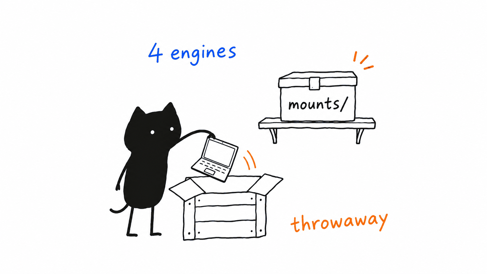

Ghost Machines
Disposable, multi-engine Linux sandboxes and autonomous agent workstations, orchestrated with Docker Compose.

What this is
Ghost Machines provisions reproducible development environments as containers: Ubuntu, Debian, Alpine or Arch, each with the same compiler, editor and agent toolchain. Your work lives in mounts/ on the host, so the container is disposable — stop it, rebuild it, re-pull it, and the workspace survives.
Two image sources, resolved by one rule: a reference containing / is pulled from GHCR, a plain tag is built locally. start.sh prints which one it chose.
In one minute
git clone https://github.com/1999AZZAR/ghost-machines.git
cd ghost-machines
make setup-host # Linux only: LXCFS
./start.sh --prebuilt ubuntu -m single # or: -e ubuntu -m single --build
ssh -p 2223 developer@localhost # password: ghost
./start.sh stop # mounts/ survives
The ten-second tour
| Engines | Ubuntu, Debian, Alpine, Arch — identical toolchain, published multi-arch. |
| Image sources | Prebuilt GHCR (pull, ~1 min) or local build (5–15 min). Pinnable by tag. |
| Permissions | developer account synced to your host UID/GID; work bind-mounted from the host. |
| Agent stack | OpenCode v2, Antigravity CLI (agy), RTK, Google Conductor, one HeLa MCP runtime endpoint (234 tools). |
| Multi-tenant | tenant.sh gives each person an isolated container, port, quota and workspace. |
| Disposable | Snapshots with SHA-256 verification, atomic restore, four cleanup levels. |
| Remote | Cloudflare Tunnel profile, no router ports. |
Where to go next
- First sandbox — Getting Started
- Prebuilt or build, pinning, upgrades — Images
- Every command, day to day — Cheatsheet
- Running it for a team — Multi-Tenant
- Before exposing it — Security & Hardening
- Something is broken — Troubleshooting
Status
MIT licensed. The full test suite (nine suites, including documentation parity checks) runs on every push; prebuilt images are published from v* tags, and this documentation site is rebuilt from docs/ on every push to master.